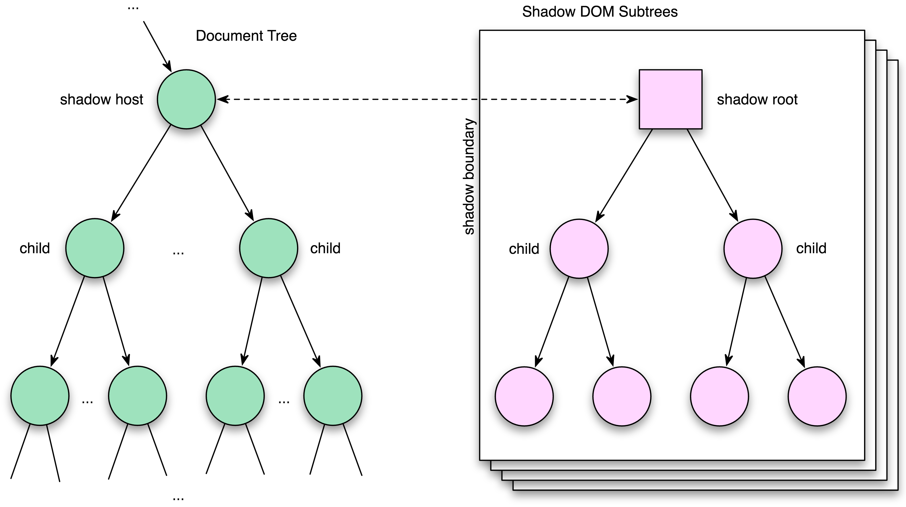
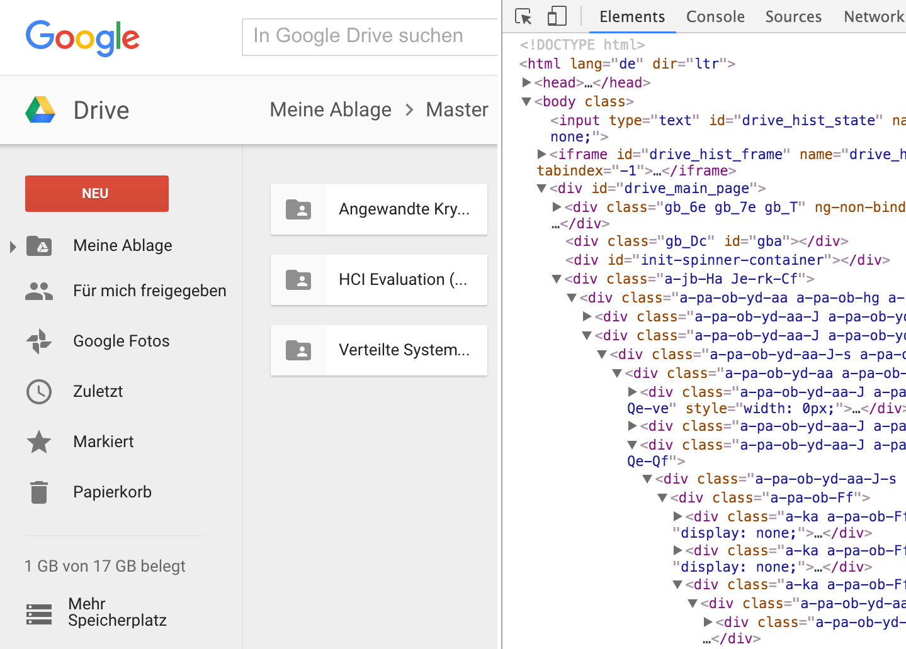
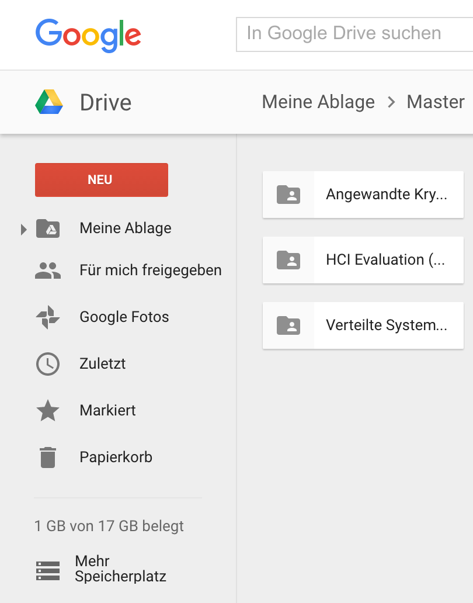
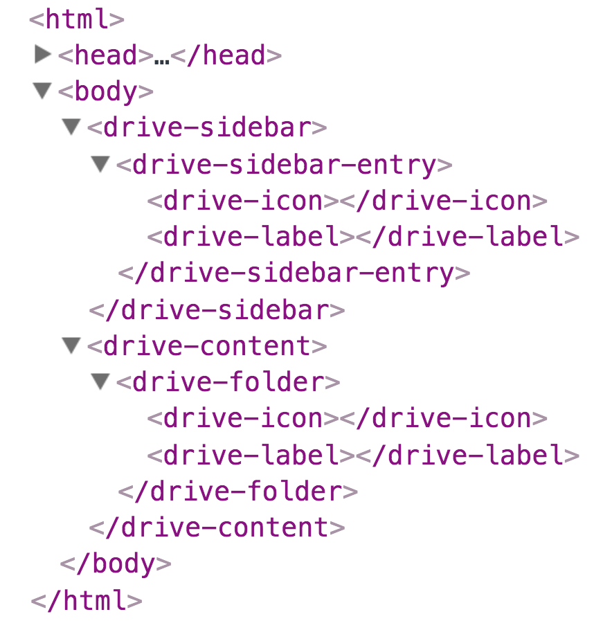
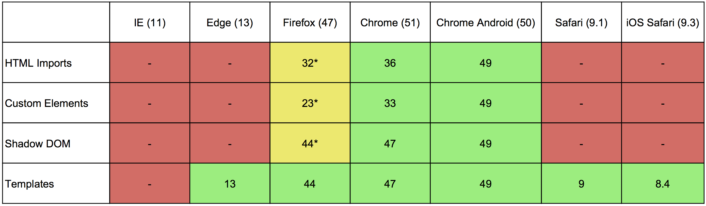
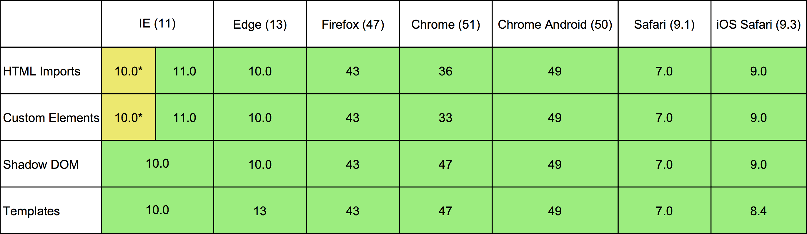
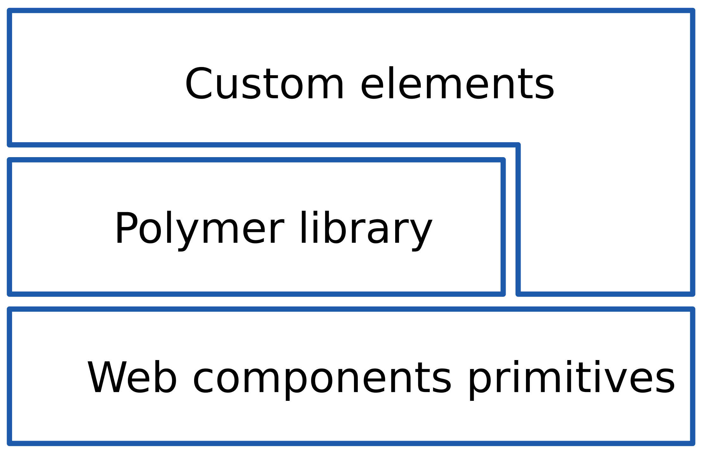
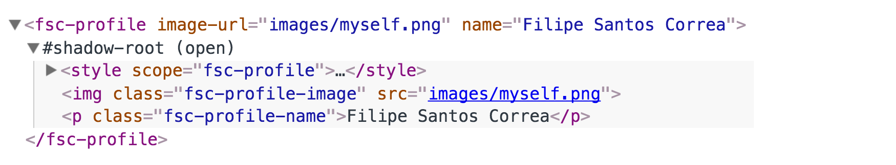
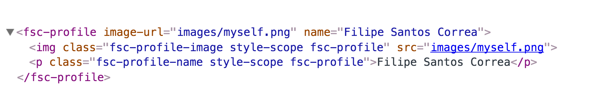

Moderne komponentenbasierte
Webentwicklung mit Polymer

Filipe Santos Correa
Gliederung
- Web Components
- Polymer
- Erstellen von Custom Elements
- Fazit
Web Components
Web Components
- HTML Imports
- HTML Templates
- Custom Elements
- Shadow DOM
HTML Imports
Bisher: iFrame, AJAX
Multimedia:
<img src="dog.jpg">
<audio src="music.mp3">
<video src="video.mp4">
HTML Imports:
<link rel="import" href="/imports/table.html">
HTML Templates
<template>
<!-- Lade Bild, sobald Template aktiv ist -->
<img src="world.png">
<!-- Führe Skript aus, sobald Template aktiv ist -->
<script>alert("Hello")</script>
</template>
Custom Elements
- HTML-Elemente
- Markup, Styling und Verhalten
<my-button></my-button>
Shadow DOM
- Document Object Model
- Schnittstelle:
- Inhalt
- Struktur
- Styles
- Dokumente als DOM-Baum im Browser dargestellt
Shadow DOM

Anwendungsfälle
Anwendungsfälle
 Browserkompatibilität

Standard Unterstützung
Browserkompatibilität

Polyfill - webcomponent.js
Polymer
Polymer
- Library um Custom Elements zu schreiben
- Liefert Polyfill für besseren Browsersupport
- Templating, Two-Way Data Binding und Property Observation
- Wird von Google entwickelt
Architektur

Katalog
Erstellen von Custom Elements
Erstellen eines Custom Elements
Erstellen eines Elements
<link rel="import" href="../bower_components/polymer/polymer.html">
<dom-module id="fsc-profile">
<template>
<style>
:host { ... }
</style>
<img class="fsc-profile-image" src="{{image-url}}"/>
<p class="fsc-profile-name">{{name}}</p>
</template>
<script>
Polymer({
is: ’fsc-profile’,
properties: {
imageUrl: String,
name: String
}
});
</script>
</dom-module>
Aufrufen des Elements
- Importieren des Elements
- Instanziierung des Elements
<link rel="import" href="fsc-profile.html">
<fsc-profile image-url="myself.png" name="Filipe Santos Correa"></fsc-profile>
Shadow vs Shady
Shadow DOM
Shady DOM
Customelements.io
Einschränkungen
- Polymer 0.5 nicht kompatibel mit 1.0
- Shady DOM und Shadow DOM
- Nur native Elemente können erweitert werden
Fazit
Fazit
- Komponentenbasierte Web-Entwicklung sinnvoll
- Polymer setzt auf W3C Standards
- Polymer erleichtert das Erstellen von Komponenten
- Polymer wird bereits produktiv verwendet